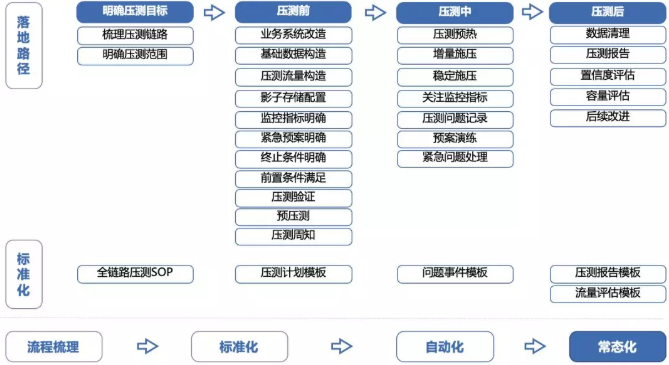
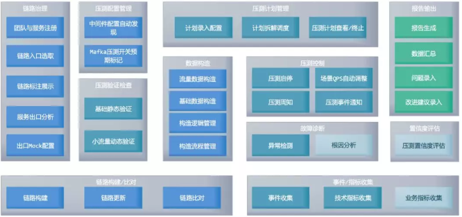
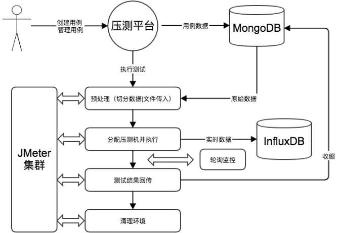
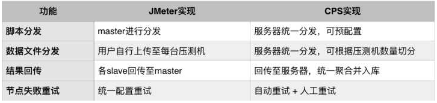
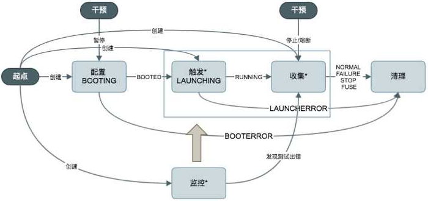
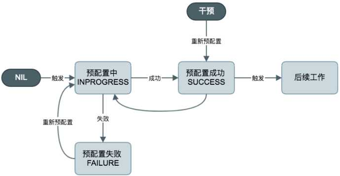

原文连接:https://www.cnblogs.com/imyalost/p/12004026.html
最近忙于公司的全链路压测平台调研和技术规划文档输出工作，参考了全网能搜到的业内大厂的全链路压测方案，这里做个汇总，以及将个人认为可以落地的方案做一个关键点整理。
技术链接
大厂方案point整理
1、逻辑思维
定位：保障业务稳定性的核心基础设施；
重要性：业务知名度高&技术团队承受压力大；
核心目标：服务可用性、稳定性、扩展性；
2、阿里巴巴
流程管理：有效的方案+充足的准备+靠谱稳定的平台；
流量识别：压测流量标记透传落影子库，同一API多次压测，防止被拦截，同一IP，白名单机制；
系统改造：①.业务改造：流量识别、单一性问题、限流拦截、报表剔除、动态校验；
数据准备：活动方案确定→业务模型评审→技术架构&压测范围&数据量级&数据形式；
①.业务模型数据：API&流量量级&配比&转化漏斗→业务抽象模型（漏斗比例不变）；
②.基础数据构造：数据量级&真实性（买家&卖家、商户&商品、价格）；
系统预热：缓存准备、系统load准备；
登录准备：模拟登录场景长链接（用户逐步登录），保护user服务；
压测方式：0点脉冲、系统摸高、限流降级、破坏性验证（容灾恢复演练）；
3、京东
场景：买家、卖家；
数据：历史双十一峰值流量作为基础流量，动态增加并发压力；
流量：日常流量、大促流量（主库写压力大）；
压测引擎：jmeter/Ngrinder；
测试脚本/数据：git/本地？
启动模式：梯度递增、脉冲、稳定水位验证；
执行方式：立刻执行、定时执行；
测试场景：压力源、虚拟用户数、测试脚本、执行方式、启动模式；
压力源：docker集群、多组、无状态（状态检查）、共享资源；
压测数据：统一存储（ES），合并计算（jmeter），grafana展示（需优化）；
流量识别、风控放行；
4、有赞
流量模型：流量来自于买家侧，正常水位-突刺-回落；
机器成本：核心链路按量扩容，卖家侧服务按需扩容，错峰；
核心链路：人多&链路复杂&梳理核心链路→汇总筛选→剔除→确认；
压测策略：单机单链路基准→单机混合链路容量→全链路压测（水位）→专项预案演练；
流量预估：监控统计-QPS、连接数、IOPS、RT、缓存命中率、consumer group、topic；
datapool：基础数据脱敏、脚本/测试数据，统一提供存储/下发/分割功能；
影子存储：DB路由：①.同instance不同schema（风险大）；②.不同instance同schema（安全性高，成本高）；
Redis路由：①.key值加统一前缀；②.Redis-client做路由；
ES路由：①.index统一加前缀，提供统一ES client做数据访问，由client做路由；
应用变更：微服务，统一隔离，流量标透传存储；
流量下发：数据文件：按照场景区分（考虑漏斗模型-转化）；
压测脚本：①.不同场景的流量配比；②.每个场景按URL从上至下做转化（gatling）；
水位检测：压测过程中，①.实时采集各应用服务的资源使用情况+RT+TPS+成功率；②.流量干预，保护生产服务不受影响；
压测实施：①.基础中间件开发，路由策略，框架升级，压测引擎选型开发调试-基础架构；
②.业务改造升级+线下验证（功能验证，手动点击，数据落影子库）-功能测试；
③.业务改造升级+生产验证（功能验证，手动点击，数据落影子库）-功能测试；
④.datapool准备：数据生成，脚本文件切割下发-业务开发&测试；
⑤.小流量下发验证-测试域同学；
⑥.模拟真实场景压测验证-团队协同；
压测方式：流量递增/爬坡（梯度增加，优化扩容）；
链路梳理：非核心链路-去依赖解耦；
长期规划：轮询化：线时链路测试机器人，实时检测；
常规化：减少人力成本投入；
日常化：尽可能少熬夜，白天完成；
图形化：链路压测规划图形化展示，与业务结合，一键完成数据准备工作；
5、美团
全链路压测思路

系统总体设计

重要程度：系统稳定性建设中的核心重要位置，也是最有效的方案；
技术背景：验证峰值流量下系统服务的伸缩性和稳定性；
验证新上线功能的可用性、稳定性；
限流、降级、熔断、告警灯故障演练；
线上服务容量评估
技术方案：获取线上真实流量-流量录制&流量回放；
快速创建压测环境-环境/服务隔离、流量标透传、灵活伸缩容；
支持多协议类型-http、tcp、webscoket、rpc、dubbo......
实时监控&过载保护；
必备功能：数据构造、压测隔离、场景管理、动态调整、实时监控、压测报告、分布式......
整体架构：web管理端：数据构造、环境准备、任务管理、场景管理、压测动态调整、报表展示；
调度中心：压测资源调度、任务分发、机器资源管理；
压测引擎：流量构造、模拟；
监控组件：实施监控、压测数据统计、聚合分析、展示；
链路梳理：工具化，提供自动构建压测入口链路完整的依赖信息，辅助提效手段；
挡板服务：配置化手段，完成外部依赖等相关接口的Mock配置，无需在业务代码中嵌入压测判断逻辑；
数据构造：流量复制、存储、清洗、解析、组合展示、偏移脱敏处理；
链路追踪：链路匹配分析定位
服务隔离：大促（业务低谷）&常规（机器隔离）
数据隔离：同库不同表（影子表）-成本低，风险较高
机器管理：动态扩容、灰度升级、异常摘除
压测引擎：jmeter&nGrinder&gatling
内存优化：内存管理&JVM参数
监控：秒级监控、实时展示、告警、服务保护
日志：压测日志采样、展示
服务治理：限流熔断降级保护
注意事项：小步快跑，及时响应、项目推广、开放生态、基础资源&赋能；
6、饿了么
用例管理：建立用例、文件上传、分类管理；
压测执行：一键启动，可指定线程数&预热时间&测试周期和负载机，文件切割分发，分布式执行；
监控数据：TPS、ART、Error%实时展示；
实时数据持久化-influxdb，设置过期时间；
冷数据持久化至MongoDB；

测试报告：用例执行完毕，自动生成测试报告；
集群监控：压测机使用状态监控，作为共享资源，提示用户可用的测试机；
安全保障：权限管理&异常操作限制；
分布式压测实现：二次开发；

异常干预：水位超限&服务保护&阈值告警&压测触发失败（形成闭环）；

influxdb轮询：http请求轮询频次较高，需优化；
预配置：提前配置，时段保留，节省时间，提高效率；

服务保护
权限分级：高峰期禁止直行；
压测干预，随时手动触发禁止动作，kill所有压测机上运行的压测进程；
限流熔断：根据错误率和告警阈值判断，达到或超过自动熔断；
兜底服务：系统不可用需要停止测试时，外部强制停止，过载保护；
以上内容，来自各大厂方案的汇总整理，仅供参考。。。